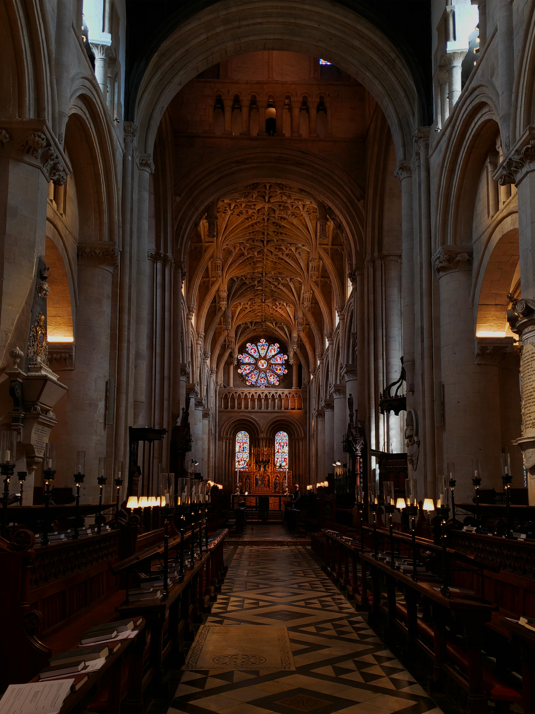

SOBRE NUESTRA IGLESIA
En "Misión San Pablo Apóstol" somos una congregación luterana conservadora, confesional, libre y viviente. Ven y conoce más de nosotros.
VER MÁS
Cristianos Luteranos
Conservadores, Confesionales,
Libres y Vivientes
Damos gracias a Dios por tu vida y por haberte traído a nuestra página. En
Misión San Pablo Apóstol
somos una congregación luterana conservadora, confesional, libre y
viviente.
Esperamos te sientas recibido y acogido entre nosotros. No dudes en contactarnos para cualquier
pregunta o petición.
EL SEÑOR TE BENDIGA SIEMPRE.
En "Misión San Pablo Apóstol" somos una congregación luterana conservadora, confesional, libre y viviente. Ven y conoce más de nosotros.
VER MÁS
En "Misión San Pablo Apóstol" tenemos actividades semanales y mensuales. Únete a nosotros.
VER MÁS
¿Hay alguien entre ustedes que esté afligido? Que ore a Dios...
¿Hay entre ustedes algún enfermo?
Que se llame a los ancianos de la Iglesia para que oren por él...
(Santiago 5:13-14)